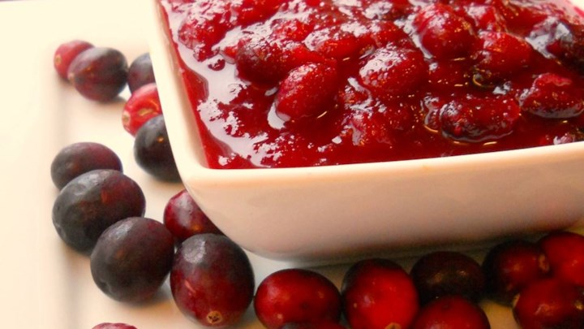

>>>Cranberry Sauce<<<
Ingredients
- 12 ounces cranberries
- 1 cup white sugar
- 1 cup orange juice
Directions
- In a medium sized saucepan over medium heat,
dissolve the sugar in the orange juice.
Stir in the cranberries and cook until the
cranberries start to pop (about 10 minutes).
Remove from heat and place sauce in a bowl.
Cranberry sauce will thicken as it cools.
